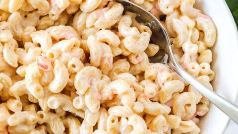

Hangten with this heavy mayo ahh island Mac Salad

This Hangten Hawaiian Mac Salad is the perfect excuse to eat carbs and mayo in the summer.
- 16oz Elbow Macaroni
- 1 Jar of Mayonnaise(Hellmans or Best foods ONLY)
- 3 Carrots julienned with a peeler
- Salt and pepper to taste
- Milk(Can sub unflavored/unsweetened soy or nut milk)
- 1 Bell pepper
- 1 bunch of green onions; sliced
- 2 tsp White Vinegar
- Start boiling a big pot of salted water
- Mix together mayo, carrot, diced bell pepper in a large bowl and chill
- Boil elbow macaroni 1 minute more than package instructs
- Drain macaroni in a strainer and allow to cool
- Once mayo mixture and macaroni is cooled, combine both in large bowl
- Salt and pepper to taste
- Gently mix in sliced green onions
- Store salad in the fridge until ready to serve
- Mac salad only gets better overtime